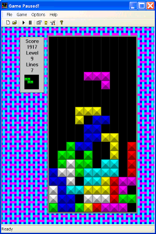

StackPack is a clone of the Tetris game.
Kolumnz is a similar game you may find interesting.
2009-04-05: Added Linux source and binary.
2005-02-12: Changed the name of the game to StackPack, and released under the Open Source GPL license.
2003-06-22: At last a new version with much prettier graphics and a revised help.
2001-05-04: Fixed minor bug. Sometimes the ini file did not load properly.
2001-01-15: Fixed some minor bugs when game files are missing.
I have ported my version of Tetris from MFC to WTL. The result is a much smaller exe.
I have improved the way the game handles stock games and custom games.
The double player layout has been improved.
Creation of new games has been improved.
The object of the game is to pack the falling blocks so as to make a full line.

Download StackPack StackPack.zip (79,969 bytes)
Download the source files for StackPack StackPackSrc.zip (92,778 bytes)
Download the Linux source files for StackPack StackPack.tar.bz2 (539,125 bytes) (this is a work in slow progress)
If you already have Git installed, you can get the latest development version via Git itself:
git clone git://github.com/steelwil/StackPack.git
Send your patches and comments to William.Bell@frog.za.net